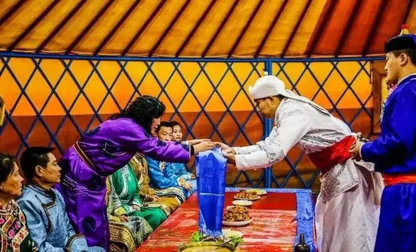
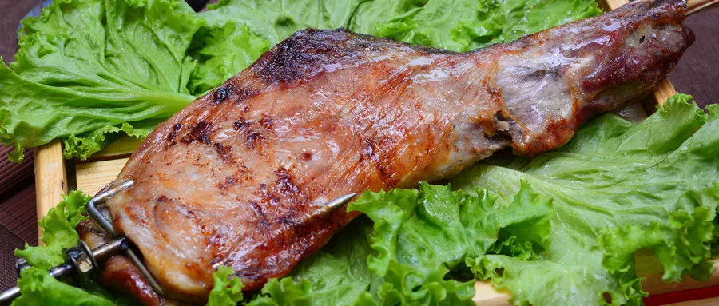

Mongolian people are straightforward and sincere in their hospitality. When a guest comes to the door, the host or hostess will stand at the door to welcome the guest respectfully and greet them warmly with "Hello" and "Good day to you". When Mongolian people meet their guests, they take out their favourite snuff bottles and let the guests sniff them. If the guest encounters such a situation, he needs to sniff it sincerely and then return the lid of the pot to the host. When the guest leaves, the host will often see off his family and say something like "goodbye", "welcome again", "have a safe journey", and so on.
Mongolian people greet their relatives or friends in a special way. When they meet each other, they usually do not ask about their health but ask if their animals are safe. This is the traditional etiquette of Mongolians, mainly because nomadic people are accompanied by livestock, which plays an important role in their daily life. This way of greeting is less used with the development of society. When Mongolians meet their guests, they usually give a handshake.
Mongolians generally do not take off their hats when they meet but give the salute of asking for peace and gesture with their right hand. If a person is on a horse, he should dismount first, and if he is sitting in a car, he should get off first to show respect. When asking for peace, a man bends his right knee and drops his right arm naturally; a woman bends her knees. When relatives meet each other, they usually give a kiss, and if the elders go out or come back, the elders should kiss the forehead of the elders to show their blessing.
Mongolians respect their elders and also respect the equality of men and women. Upon entering the yurt, the host will ask the guest to sit in the most prestigious position in the yurt (the seat in the back half), and the male guest should walk towards the seat from the left-hand side around the cooker placed in the centre of the yurt. The host usually treats the guests with tea, snacks, and dairy products. When the host makes a toast, if the guest drinks it all in one go, the host takes it as a sign of respect and sincerity.
Mongolian people love to eat meat and dairy foods, especially lamb, such as hand-picked lamb, roasted whole lamb, stone-roasted meat, etc. They often put the whole piece of meat into a pot and stew it, then fish out the meat when it is six mature and eat it by tearing it with their hands or cutting it with a small knife. It is customary to eat with hands and sometimes with a knife and fork. Mongolians do not eat shrimp, crab, seafood, and "three birds" (i.e., chicken, duck, goose), offal, and do not eat fish, as they consider fish to be the embodiment of God. They like horses, so they do not eat horse meat.
Islamists in Mongolia abstain from eating pork and pig products and abstain from talking about pig-related issues. It is forbidden to hunt around the temples, slaughter animals inside the temples, and not to smoke or spit in the scripture halls.
Mongolians love the color blue, which symbolizes eternity, steadfastness, and loyalty, and therefore call their country "Blue Mongolia". They cherish the color yellow, which they consider to be the color of gold and treasures and a symbol of glory and wealth. They prefer red, which they believe symbolizes happiness, victory, and closeness. They also like the color white, which they believe symbolizes cleanliness, simplicity, and justice. Mongolians generally dislike the color black, which they regard as ominous.
Mongolians avoid people touching their heads and hats, and they don't like people pointing at their heads with cigarette packs or fingers, as these are considered impolite behaviors. Mongolian people avoid throwing dirty things into the fire, cannot cross from the fire, and cannot put knives, axes, and other sharp objects beside the fire.
Mongolian people send gifts but it is taboo to send a hat with the mouth of the hat facing down, as the sender will damage the luck of others. When wearing a Mongolian robe, it is taboo to push up the sleeves, which is believed to make people think they want to fight. You should not step on the threshold of the ger when you enter the ger. When receiving goods, it is honored to receive them with both hands or with the right hand, but not with the left hand only.